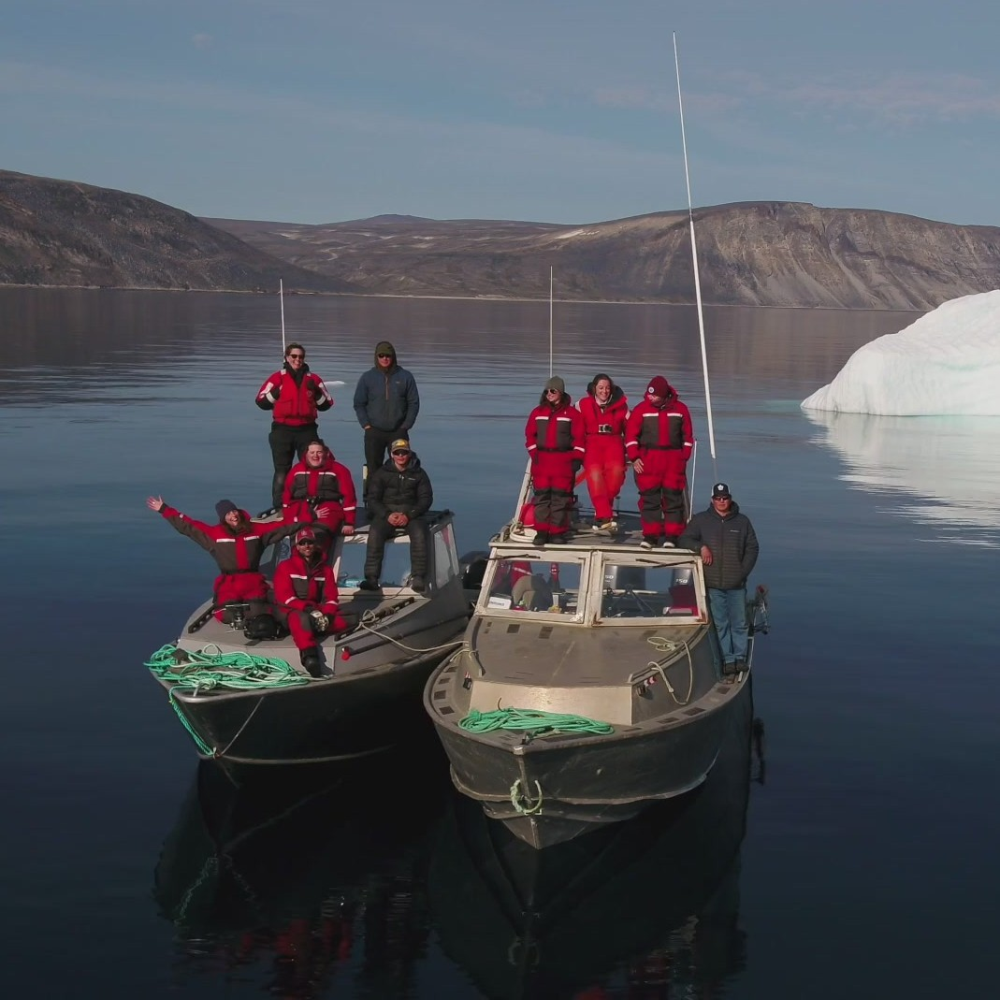
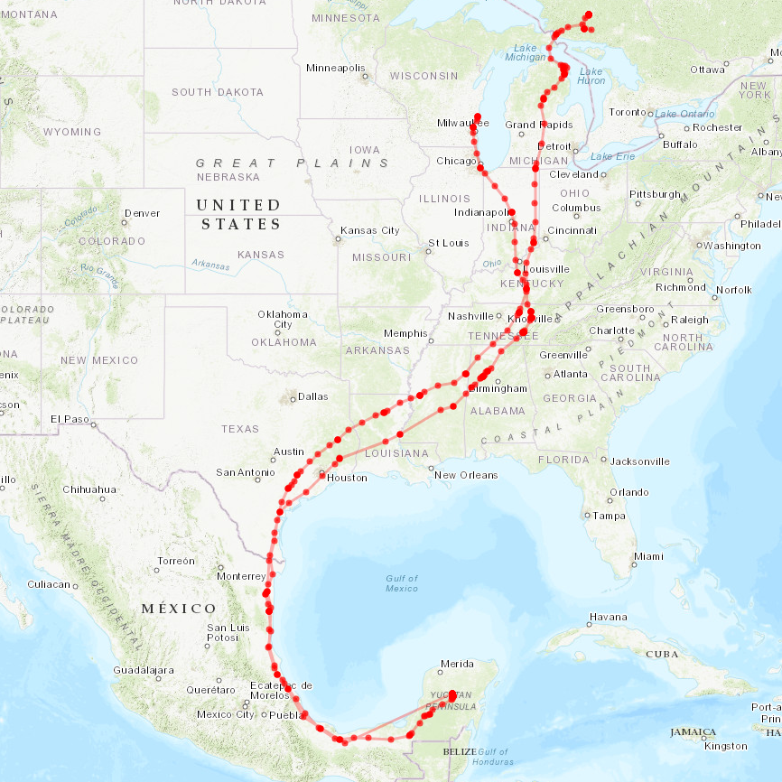

Segre Ecophysiology Lab
biomechanics. physiology. ecology.
A pod of Risso's dolphins (Grampus griseus). Photo by P. Segre.
Paolo Segre checking the body condition of an American robin (Turdus americanus).

Bowhead whale foraging ecology field crew. A collaboration with Dalhausie University, August 2024.
Marissa Helgesen catching frogs on the UWGB campus for her master's thesis research
Danny Erickson checking feather condition on a juvenile bald eagle (Haliaeetus leucocephalus) at the Cedar Grove Ornithological Research Station.

The migratory path of a tracked sharp-shinned hawk (Accipiter striatus) caught at Cedar Grove Ornithological Research Station, as part of Danny Erickson's master's thesis research.
Paolo Segre tagging a humpback whale (Megaptera novaeangliae) in South Africa with a suction-cup tracker. A collaboration with the University of Pretoria Whale Unit, January 2025.
Underwater footage of a feeding southern right whale (Eubalaena australis) in South Africa. A collaboration with the University of Pretoria Whale Unit, January 2023.
Edwin Wilke extracting a bird from a mistnet as part of his master's thesis research.
A northern green frog (Lithobates clamitans), one of our lab's study species at the Wequiock Creek Natural Area. Photo by P. Segre.
A camera trap image of a masked shrew (Sorex cinereus) at Kingfisher Farm Natural Area. Photo taken by Gweni Malokofsky as part of her undergraduate research.
Gweni Malokofsky preparing camera traps for small mammal surveys, as part of her undergraduate research.
The UWGB peregrine falcons, June 2025.